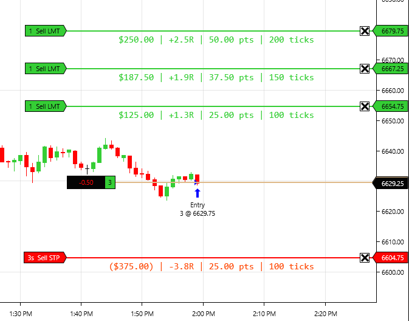
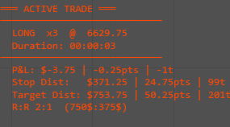
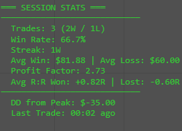
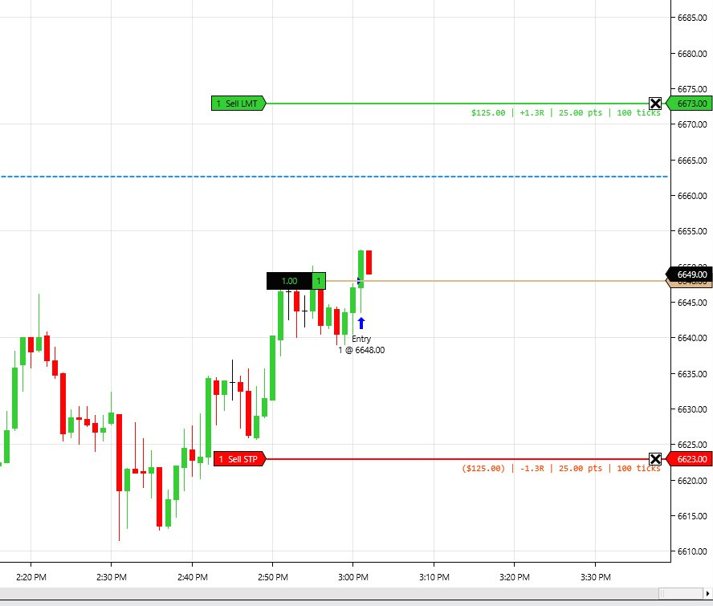

Stop Over Trading.
Start Disciplining.
TradeLock Pro enforces your trading rules inside NinjaTrader 8. Time lockouts, consecutive loss cooldowns, session trade limits — and it survives restarts. Your discipline, automated.
You already know your rules.
You just can't follow them.
You hit your profit target by 10am. Then you take one more trade. Then another. By noon, a green day turns red. Sound familiar? You're not alone — overtrading is the #1 account killer in futures.
Revenge Trading
One loss triggers another. Then another. Your $200 loss limit turns into $800 before you blink.
Trading Outside Your Window
You know you're sharpest between 9:30–11am. But at 2pm, there you are, "just one more."
Too Many Trades
Your journal says 3 trades/day is optimal. Your account says you averaged 11 last week.
Rules that enforce themselves.
TradeLock Pro runs alongside your normal NinjaTrader workflow. Trade however you want — Chart Trader, DOM, hotkeys. TradeLock monitors your activity and disables the buttons when you break your own rules.
Time-of-Day Lockouts
Define your trading window. Outside those hours, the Chart Trader buttons are disabled. No temptation, no willpower required.
Consecutive Loss Cooldowns
Hit 3 losers in a row? TradeLock forces a configurable cooldown period. Come back calm, not tilted.
Max Trades Per Session
Set your daily trade limit. Once you hit it, you're done. The platform won't let you enter another position.
Restart-Proof Lockouts
Every other discipline tool resets when you restart NinjaTrader. TradeLock writes state to disk. Restarting changes nothing. Your rules persist.
Works With Your Existing Setup
TradeLock doesn't replace your buttons or your workflow. It monitors all trades on your account — Chart Trader, DOM, ATM strategies, hotkeys — and enforces limits across all of them.
Discipline Dashboard
Live on-chart panel showing trades taken, consecutive losses, cooldown status, session P&L, and how many times you've disabled the tool today. No hiding from yourself.
How it stacks up.
| Feature | NT8 Built-in | RiskMaster | Guardian Angel | TradeLock Pro |
|---|---|---|---|---|
| P&L-based lockout | ✓ | ✓ | ✓ | ✓ |
| Time-of-day lockouts | ✗ | ✗ | ✗ | ✓ |
| Consecutive loss cooldown | ✗ | ✗ | ✗ | ✓ |
| Max trades per session | ✗ | ✓ | ✓ | ✓ |
| Survives NT8 restart | N/A | ✗ | ✓* | ✓ |
| Tracks all order types | N/A | ✗ | ✓ | ✓ |
| Disable shame counter | ✗ | ✗ | ✗ | ✓ |
| No third-party password needed | N/A | ✓ | ✗ | ✓ |
| Price | Free | Free | ~$300 | $149 |
* Guardian Angel Trader requires a trusted person to hold a password. Users report issues with forgotten passwords causing account lockout problems.
On a real NinjaTrader 8 chart.
One purchase. Lifetime access.
One-time payment • No subscription • Free updates
- Time-of-day trading window lockouts
- Consecutive loss cooldowns
- Max trades per session hard stop
- Restart-proof state persistence
- Tracks all order types (Chart Trader, DOM, ATM, hotkeys)
- Live discipline dashboard on chart
- Disable tracking (shame counter)
- Alert sounds on lockout events
- Works with any instrument on NinjaTrader 8
- Quick-start installation guide
- Email support from the developer
- Free updates for life
Price increases to $199 after early adopter period ends.
I built this for myself first.
I spent months coding NinjaTrader strategies, backtesting systems, and searching for an edge. What I found was that the biggest edge wasn't in my indicators — it was in my discipline. I was overtrading, revenge trading, and breaking my own rules. So I coded something to stop me. It worked. Now I'm sharing it.
This isn't a tool built by a software company that's never placed a trade. It's built by a futures trader who was tired of being his own worst enemy.
Common questions.
What instruments does it work with?
TradeLock Pro works with any instrument supported by NinjaTrader 8 — MES, MNQ, ES, NQ, and all other futures, forex, and equities.
Does it work with my existing trading setup?
Yes. TradeLock Pro monitors trades at the account level. It works with Chart Trader, the DOM, ATM strategies, hotkey orders — any way you place trades. It doesn't replace your buttons or change your workflow.
Can I bypass the lockout by restarting NinjaTrader?
No. TradeLock writes your session state to disk. When NinjaTrader restarts, it reads the file and re-applies all active lockouts for the current session.
What if I disable the strategy?
You can disable it — we can't stop that. But TradeLock tracks how many times you disable it each day and shows the count on the dashboard. You can't hide from your own behavior.
Does it work with sim accounts?
Yes. We recommend testing all your rules in sim mode first before going live.
What version of NinjaTrader is required?
NinjaTrader 8.1.3.1 (64-bit) or higher.
Do I get updates?
Yes. All future updates are included free. Feature requests welcome — the roadmap is driven by what traders actually need.
What's coming in future versions?
Win-then-give-back protection (trailing stop on your daily P&L), daily loss limit lockouts, volatility filters, news event lockouts, and a discipline statistics dashboard. All included free for existing customers.
Your next blown account costs
more than $149.
One revenge trade can wipe out a week of profits. TradeLock Pro pays for itself the first time it stops you from making a trade you'd regret.
Get TradeLock Pro — $149Your chart shows price.
This shows you.
TradeLock Analytics puts real-time trade P&L, R:R, session stats, and revenge trading detection directly on your chart. See your discipline breaking down before it costs you money.
You find out you're tilting
after the damage is done.
Trading journals are great — for reviewing yesterday's mistakes. But by the time you open your journal, the revenge trades already happened. You need awareness in real-time, on the chart, while you're trading.
Revenge Trading
45 seconds after a loss, you're already in another trade. No plan, no edge — just emotion. You don't even notice the pattern until the session is over.
Hidden Drawdown
You were up $400 at 10am. By noon you're at $50. You don't realize you gave back $350 because you never tracked the peak.
No Live Stats
NinjaTrader's Trade Performance window is buried in menus. You want win rate, streak count, and profit factor visible while you trade — not after.
Active trade P&L + session behavioral stats.
TradeLock Analytics runs as an indicator on any chart. It auto-detects your account and shows two live panels — one for your current position, one for your session performance.

Per-Order P&L Labels
Dollar amount, R-value, points, and ticks rendered directly at each stop and target price level on your chart. Works with multi-target ATM strategies out of the box.
- See exact dollar risk and reward at each order level
- R-value displayed per order when risk is configured
- Updates automatically when you drag orders
- Aggregates split ATM orders at the same price
Active Trade Panel

Session Stats Panel


Recovery Line — Only in TradeLock
When you're down on the session, a blue dashed line appears showing the exact price where your current trade erases all session losses and brings you back to zero.
- Answers "how far does this trade need to run to save my day?"
- Automatically calculated from session P&L and position size
- Disappears when session P&L is positive
- No other NinjaTrader indicator does this
Per-Order P&L Labels
Dollar amount, points, ticks, and R-value rendered directly at each stop and target price level on your chart. Not in a side panel — right on the price bars where you're looking.
Real-Time R:R Display
See your risk-to-reward ratio calculated from entry, stop, and target. Updates when you drag orders. Fixed math, no guessing.
Recovery Line
When you're down on the session, a horizontal line shows exactly where your current trade needs to reach to erase all session losses and bring you back to zero. Nobody else has this.
Revenge Trading Timer
Live countdown showing time since your last trade. Turns yellow under 2 minutes, red under 1 minute after a loss. Audio alert when you re-enter too fast. Catch yourself before the damage.
Loss Streak Warnings
Consecutive loss counter with escalating visual and audio alerts. At 3 losses in a row, the panel goes red and sounds an alarm. Configurable threshold.
Drawdown from Session Peak
Tracks your highest P&L today and shows how far you've fallen from it. Prop traders: this is your trailing drawdown awareness, right on the chart.
Session Stats Dashboard
Trade count, win rate, profit factor, average winner/loser, R-multiple tracking — all live, all on-chart. No need to open separate windows or external journals.
Zero Configuration Start
Add to chart, done. Auto-detects your active account. Works with any instrument, any timeframe, any order method. Single .cs file, no dependencies.
Everything in one indicator.
TradeLock Analytics extends your NinjaTrader 8 workflow with on-chart analytics designed for discipline-focused traders.
Active Trade Analytics
Per-order P&L labels in dollars, R-value, points, and ticks directly at each price level. R:R ratio, stop & target distance, trade duration — all on-chart, all live.
Session Performance
Trade count, win rate, profit factor, average winner/loser, R-multiple tracking, and drawdown from session peak — updated after every trade close.
Behavioral Awareness
Revenge trading timer, consecutive loss streak warnings with audio alerts, and the recovery line showing where your current trade erases session losses.
One purchase. Lifetime access.
One-time payment • No subscription • Free updates
- Per-order P&L labels on chart (dollars, points, ticks, R-value)
- Real-time R:R ratio display
- Active trade panel (direction, quantity, entry, duration, unrealized P&L)
- Session stats panel (win rate, profit factor, avg winner/loser)
- Win/loss streak counter with visual escalation
- Revenge trading timer with audio alerts
- Drawdown from session peak tracking
- Recovery line (session break-even price)
- R-multiple tracking across session
- Configurable behavioral thresholds
- Works with any instrument on NinjaTrader 8
- Email support from the developer
- Free updates for life
I built this for myself first.
I got tired of finding out I was tilting after the damage was done. Journals are great for reviewing yesterday — but I needed awareness in real-time, on the chart, while I was trading. So I built it.
Common questions.
Is this an indicator or a strategy?
Indicator. It runs on any chart, doesn't place or manage orders, and doesn't affect your trading. It's display and alerts only.
Does it work with ATM strategies?
Yes. It reads your active orders (stops and targets) regardless of how they were placed — ATM, manual, hotkeys, DOM.
What's the recovery line?
When your session P&L is negative, the recovery line shows the exact price where your current trade would need to exit to erase all session losses and bring you back to break-even on the day.
Does it replace my trading journal?
No. It supplements your journal with real-time awareness while you trade. Journals analyze after the session. TradeLock Analytics warns you during the session before bad decisions happen.
Does it work with TradeLock Pro?
Yes. They run independently on the same chart. Pro enforces rules and disables buttons. Analytics shows you stats and warns you. Different tools, complementary purposes.
What instruments does it work with?
Any instrument on NinjaTrader 8 — futures, forex, equities. It auto-detects the instrument's tick size and point value.
Do I get updates?
Yes. All future updates are free. Planned: dynamic break-even on partial scale-outs, CSV export, multi-day rolling stats.
You can't fix what you
can't see happening.
Every revenge trade, every tilt spiral, every session drawdown — they all have warning signs. TradeLock Analytics makes those signs impossible to ignore.
Get TradeLock Analytics — $49Prop firm rules.
Auto-enforced.
TradeLock Prop Mode loads your firm's exact rules — trailing drawdown, daily loss limit, consistency thresholds — and enforces them in real-time. One blown rule won't blow your funded account.
Manual rule tracking
is a recipe for disaster.
You're watching charts, managing positions, reading price action — and simultaneously trying to remember whether your trailing drawdown is intraday or end-of-day. Whether you've hit 80% of your daily loss limit. Whether you're within your consistency threshold. One mistake and the account is gone.
Prop Firm Presets
Pre-configured rules for top prop firms. Select your firm and account size — drawdown type, daily loss limit, profit target, and contract caps all load automatically.
Trailing Drawdown Display
Real-time on-chart tracking of your trailing drawdown level — whether it's intraday or end-of-day. Always know exactly how close you are to liquidation.
Daily Loss Limit Lockout
Automatic position flattening and button disabling when you approach your daily loss limit. Configurable warning zone before hard lockout.
P&L-Based Enforcement
All lockouts driven by actual P&L tracking. Combines the discipline enforcement of TradeLock Pro with prop-firm-specific rule awareness.
Launching soon at $199.
TradeLock Prop Mode is in active development. Get TradeLock Pro or Analytics today and be the first to know when Prop Mode launches.
Help shape
TradeLock.
Every feature request is reviewed. Every suggestion is considered for future updates. TradeLock is built by a trader, for traders — your input drives what gets built next.
Want to try TradeLock first?
Get TradeLock Pro today and start enforcing your trading rules. Your feedback as a user carries even more weight.
Get TradeLock Pro — $149